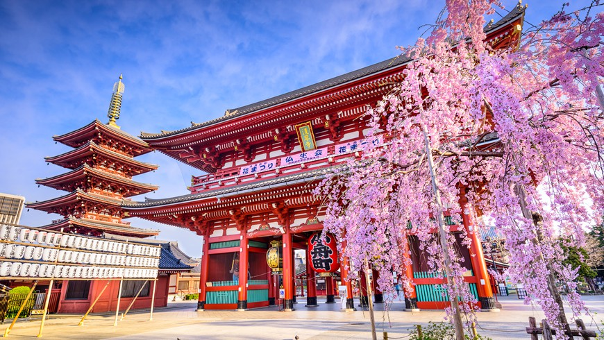

Токио
Токио - столица и крупнейший город Японии, один из самых современных и технологичных городов мира.
- Население: 13,9 млн
- Основные достопримечательности: Токийская башня, Императорский дворец, Район Сибуя
- Язык: японский
- Валюта: иена
Основные достопримечательности
| Название | Описание | Расположение |
|---|---|---|
| Токийская башня | Телекоммуникационная и смотровая башня. | Минато |
| Императорский дворец | Резиденция императора Японии. | Тиёда |
| Район Сибуя | Известный перекресток и центр молодежной культуры. | Сибуя |
| Храм Сэнсо-дзи | Буддийский храм в районе Асакуса. | Асакуса |
